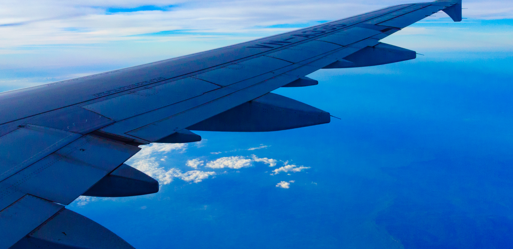

How to way
行き方
カンボジアに行くには
行き方フライトは直行便が首都プノンペンまでしかなく、アンコールワットのあるシェムリアップには乗継便が一般的です。
プノンペン国際空港は現在新空港が建設中で、2023年の開港を目指しています。
ビザ（査証）が必要です。観光査証の場合の滞在可能日数は一ヶ月。
ビザの申請には、2ページ以上のパスポート未使用ページ、入国時6ヶ月以上有効なパスポートが必要です。


↑プノンペン国際空港


↑シェムリアップ国際空港